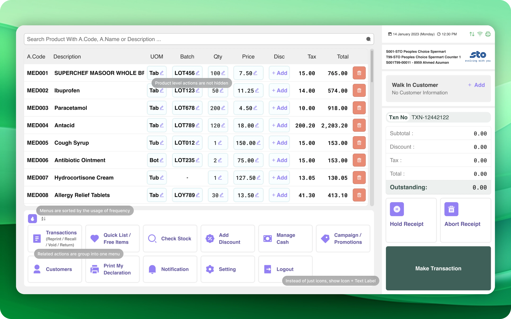
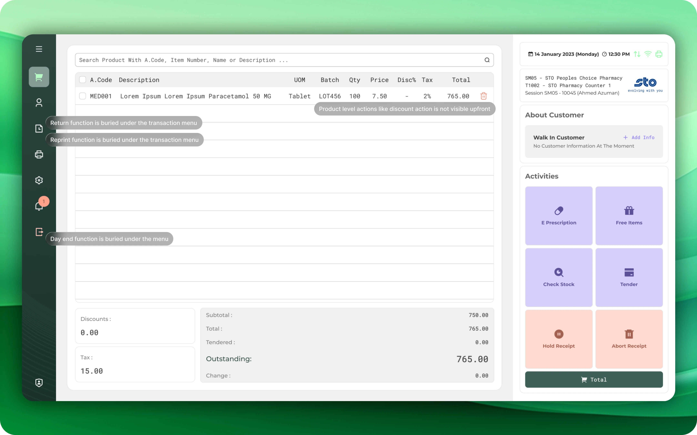
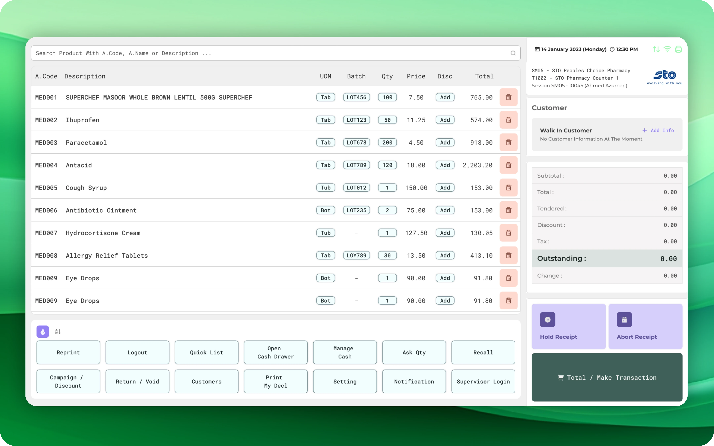

Explore More
More
Case Studies
Case Studies

Cashiers couldn't find the return button. Each wasted second, multiplied across thousands of daily transactions, bled money.
Four features were live, all invisible. Each wasted second across thousands of daily transactions added up to real revenue loss. I asked the same questions of cashiers and business stakeholders, overlaid the answers, restructured the POS hierarchy around the gap, and surfaced the verbs that mattered most.
It started with a single sentence at a workshop in Maldives.
"Cashiers are struggling with the new return process. They can't understand the design... but we don't know why."
— Colleague, Maldives WorkshopThat was all I needed to hear. I started watching cashiers work. Not through analytics dashboards — in person, on the shop floor, during real transactions.
What I saw was painful. Every hidden button, every missing label cost seconds. Not dramatic seconds — the kind nobody notices individually. But multiply a 30-second delay by thousands of transactions per day, across every store in the chain, and the cost becomes enormous.
The POS wasn't broken. It was invisibly expensive.

I audited the interface against the tasks cashiers performed most. Four features stood out — not because they were complex, but because they were hidden:
Four critical daily tasks. All invisible in the interface.
I could have asked stakeholders what matters most and started designing. Instead, I ran the same importance-ranking exercise twice — once with business stakeholders, once with cashiers on the shop floor. Identical scale, identical activity list. Two heat maps. Then I overlaid them.
The business map. Internal stakeholders voted on each activity's importance (1-5 scale). The result told me what leadership thought mattered.
The cashier map. Same questions, same format, asked of the people doing the work. The result told me what actually caused friction every shift.
Total, Reprint, Void, and Hold scored high on both sides — clear mandate. The real surprise was Returns. Business rated them low — "returns are rare." Cashiers rated them as their #1 frustration.
Why? Returns weren't frequent. But every single return had a customer standing at the counter, watching, waiting. The per-incident impact was enormous — and invisible in aggregate data.

I restructured the menu around two principles: group by relationship, sort by frequency. The mid-fi prototype exposed every critical action on the primary screen.
Tested with cashiers on real transaction scenarios — not hypothetical tasks, but the actual workflows they ran daily.
Return scored highest — the exact feature that started this project, the one business had dismissed as "rare." The dual-audience overlay validated the approach: we were fixing the right thing.
Four structural changes, each solving a specific pain point from the audit:
Every second saved compounds. Here's what the redesign delivered:
Time saved per return × returns/day × cashier hourly cost × payback window ÷ design investment
= 30s × ~1,500 daily transactions across the chain × $8/hr cashier cost × 6 months ÷ design hours invested
Inputs were agreed with the Finance Lead before launch. Time-per-return was measured on the floor before and after deployment (1 minute → under 30 seconds). The cashier hourly figure and transaction volume came from internal payroll and POS data. The 6-month window is the payback horizon the client used for every internal tooling project — not a number I picked.
The redesign didn't just make things faster. It made the cost of UX debt visible — and gave stakeholders a framework to evaluate future design investments.
The first stakeholder conversation pointed us toward the sale flow. It was only when I watched cashiers directly — not through reports, not through surveys — that returns emerged as the real friction point. Observation beats assumption every time.
Returns were "rare" in aggregate. But every slow return had a customer standing at the counter, watching, waiting. The impact per incident was enormous — and completely invisible in dashboard metrics.
The assumption "returns are rare" wasn't wrong once. It was wrong for years — creating hidden costs that grew with every new store, every new cashier, every new deployment. Nobody questioned it because nobody measured it.
The overlaid business-vs-cashier heat map made prioritization objective. When I showed it to leadership, the conversation shifted from "I think we should…" to "the data shows we should…" Stakeholders agreed because it was evidence, not opinion.
Open to senior roles in product and UX. Looking for a team that ships things and cares whether they work.